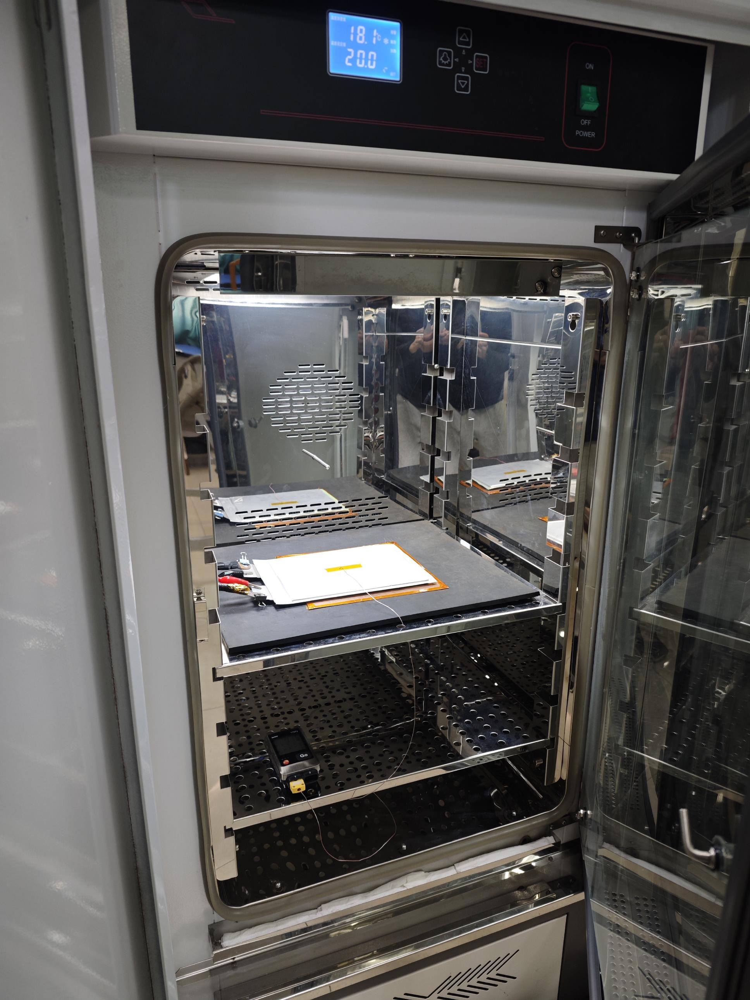
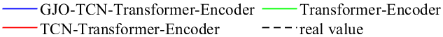
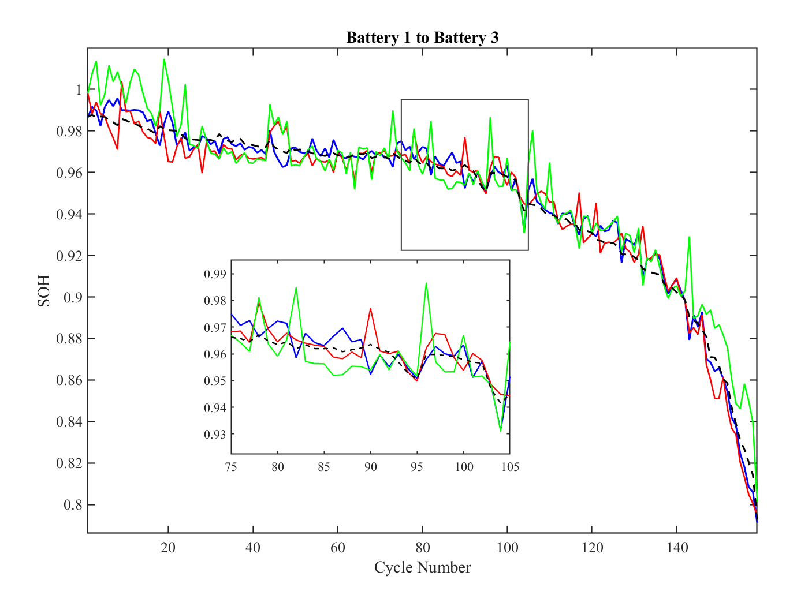
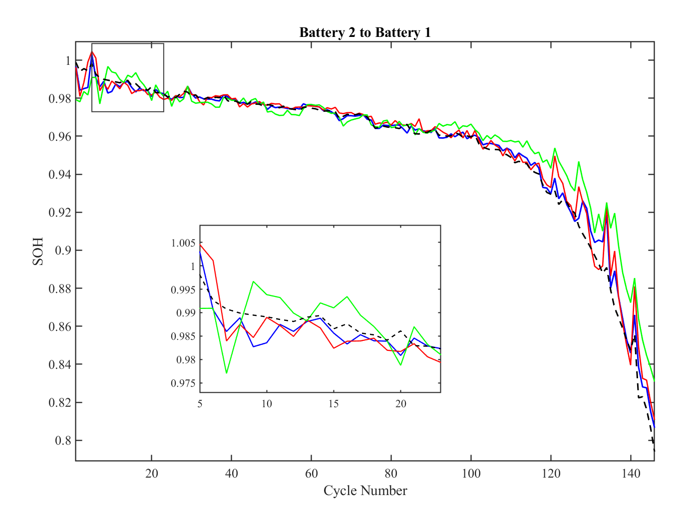
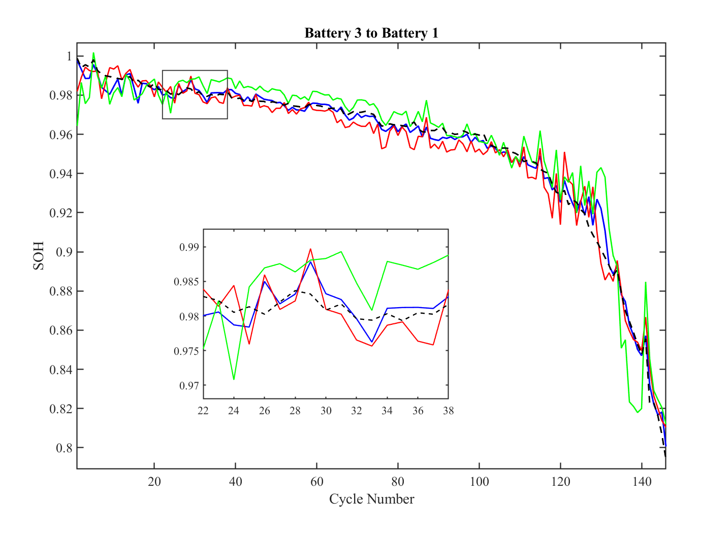

Prepare data
Align cycling records and derive health indicators from voltage, current, capacity, and degradation behavior.
A GJO-TCN-Transformer framework that transfers degradation knowledge from eight public cells to high-rate automotive pouch cells when full-life target data are limited.
Fast-charging experiments are expensive and time-consuming, while models trained only on public low-rate or small-cell datasets may not generalize to large-format pouch cells. The study asks whether multi-source degradation knowledge can support accurate full-life SOH prediction with limited labeled high-rate data.
Three commercial LG NMC32 pouch cells were cycled in a temperature-controlled chamber. Voltage, current, capacity, and temperature were recorded across the aging process to form the target domain.


The source domain supplies diverse degradation patterns. The laboratory target domain tests whether those patterns transfer across cell format and charging rate.
| Domain | Cells | Purpose |
|---|---|---|
| NASA | B5, B6, B7 | Source-domain learning |
| CALCE | C35, C36, C37 | Source-domain learning |
| XJTU | D1, D2 | Source-domain learning |
| Laboratory pouch cells | Battery 1, 2, 3 | Fine-tuning and cross-battery evaluation |
The workflow separates broad degradation-pattern learning from target-domain adaptation so that limited high-rate labels can be used efficiently.
Align cycling records and derive health indicators from voltage, current, capacity, and degradation behavior.
Use Pearson correlation analysis to retain indicators that track capacity decline.
Learn shared temporal degradation patterns from eight cells across three public datasets.
Freeze TCN parameters, tune the target model with GJO, and predict the full life of another pouch cell.
Captures local degradation patterns with causal temporal convolutions.
Models long-range dependencies across the battery aging sequence.
Searches key target-domain hyperparameters used during adaptation.
The proposed GJO-TCN-Transformer reported the lowest MAE, RMSE, and MAPE among the three compared models in all four transfer settings.
| Fine-tuning cell → prediction cell | MAE (%) | RMSE (%) | MAPE (%) |
|---|---|---|---|
| Battery 1 → Battery 2 | 0.298 | 0.436 | 0.325 |
| Battery 1 → Battery 3 | 0.417 | 0.524 | 0.444 |
| Battery 2 → Battery 1 | 0.308 | 0.528 | 0.334 |
| Battery 3 → Battery 1 | 0.300 | 0.451 | 0.319 |
Each plot compares the proposed model with TCN-Transformer and Transformer baselines against the measured SOH trajectory.





Rong Zhang, Xilong Li, and Hai Wang. “Health Prediction of Lithium-ion Batteries via Cross-Rate Transfer Learning Based on a TCN-Transformer Model.” First-round peer review completed; revised manuscript submitted to the Journal of The Electrochemical Society, JES-116943.R1, 2026. DOI not yet available.